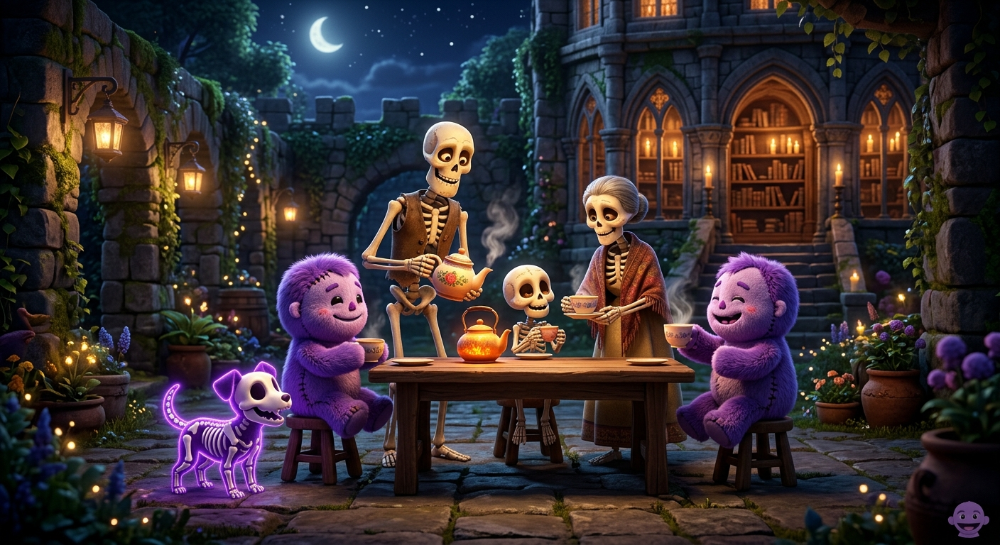

Scheletri e Zombie a Merenda
Questa storia parla di una simpatica famiglia di scheletri, con tanto di cagnolino scheletro al seguito!
Una volta hanno voluto fare una passeggiata nel buio buio giardino. Nel buio buio giardino c'era un buio intenso e misterioso... e proprio lì in mezzo spuntava una grande libreria!
Dentro la libreria c'erano tantissimi zombie zombie che, invece di fare paura, hanno chiesto molto gentilmente un po' di tè caldo.
Allora gli scheletri sono tornati di corsa a casa, hanno preparato una tazza di tè fumante e l'hanno portata agli zombie. Ma il tè era così buono che gli zombie ne hanno voluto ancora di più, e poi ancora di più!
Così gli scheletri sono tornati di nuovo a casa e questa volta hanno portato due bei bicchieri colmi di tè. Gli zombie li hanno bevuti tutti d'un fiato e hanno esclamato educatamente:
Allora la famiglia di scheletri, felice di ospitarli, ha chiesto: